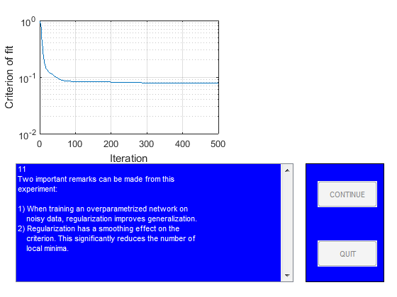

close all
StopDemo=0;
figure
guihand=gcf;
for k=1:1,
[guihand,edmulti,contbut,quitbut]=pmnshow;
set(guihand,'Name','Demonstration of regularization');
s0='1';
s1='In this demo it is shown how regularization by simple';
s2='weight decay might be of help when dealing with';
s3='overparametrization in neural networks.';
s4=[];
s5='The problem, which will be the subject of our';
s6='investigation, is to use a neural network for fitting';
s7='the underlying sine wave from the points marked';
s8='''training data.''';
smat=str2mat(s0,s1,s2,s3,s4,s5,s6,s7,s8);
load('dataSetofSpam.mat');
PHI1=trainData;
Y1=trainlabel;
PHI2=testData;
Y2=testlabel;
PHI1=PHI1';
PHI2=PHI2';
Y1=Y1';
Y2=Y2';
sub1=subplot('position',[0.1 0.55 0.38 0.38]);
plot(PHI1,Y1,'+');
set(gca,'Xlim',[min(PHI1(:)) max(PHI1(:))]);
title('Training data');
sub2=subplot('position',[0.57 0.55 0.38 0.38]);
plot(PHI2,Y2,'m+')
set(gca,'Xlim',[min(PHI2(:)) max(PHI2(:))]);
title('Test data');
drawnow
if StopDemo==1, close all, break; end
s0='2';
s1='Let''s begin by training a network with 15';
s2='hidden ''tanh'' units and one linear output unit';
s3='without using regularization.';
smat=str2mat(s0,s1,s2,s3);
NetDef = ['HHHHHHHHHHHHHHHHHHHH'
'L-------------------'];
W1 = rand(20,10);
W2 = rand(1,21);
delete(sub1);
delete(sub2);
sub1=subplot('position',[0.1 0.55 0.45 0.38]);
pmnshow(smat,guihand,edmulti,contbut,quitbut);
if StopDemo==1, close all, break; end
s0='3';
s1=[];
s2=' >> Training process in action!! <<';
s3=[];
s4=[];
s5='We run up to 500 iterations so you may have to';
s6='wait for a while!';
smat=str2mat(s0,s1,s2,s3,s4,s5,s6);
set(edmulti,'String',smat);
drawnow
trparms = settrain;
trparms = settrain(trparms,'maxiter',500);
[W1,W2,NSSEvec,iter,lambda2]=marq(NetDef,W1,W2,PHI1,Y1,trparms);
delete(gca);
subplot('position',[0.1 0.55 0.45 0.38]);
semilogy(NSSEvec);
xlabel('Iteration');
ylabel('Criterion of fit');
grid
s0='4';
s1='Next we compute training error, test error,';
s2='FPE estimate, and LOO estimate to get an idea';
s3='of how well the network fits the curve.';
smat=str2mat(s0,s1,s2,s3);
pmnshow(smat,guihand,edmulti,contbut,quitbut);
if StopDemo==1, close all, break; end
[Yhat,E,NSSE_tr] = nneval(NetDef,W1,W2,PHI1,Y1,1);
[Yhat,E,NSSE_te] = nneval(NetDef,W1,W2,PHI2,Y2,1);
FPE = fpe(NetDef,W1,W2,PHI1,Y1,trparms);
trparms2 = settrain(trparms,'maxiter',0);
ELOO= loo(NetDef,W1,W2,PHI1,Y1,trparms2);
s0='5';
s1=['Training error: ' num2str(NSSE_tr)];
s2=['Test Error: ' num2str(NSSE_te)];
s3=['FPE estimate: ' num2str(FPE)];
s4=['LOO estimate: ' num2str(ELOO)];
smat=str2mat(s0,s1,s2,s3,s4);
pmnshow(smat,guihand,edmulti,contbut,quitbut);
if StopDemo==1, close all, break; end
s0='6';
s1='This result is typical for networks having too many';
s2='weights. The superflous weights will capture';
s3='some of the noise on the training set, leading to';
s4='a poor generalization ability. This phenomenon is';
s5='usually referred to as ''overfitting''';
s6=[];
s7='Let''s try to train with a small weight decay (0.02)';
s8='and see what happens.';
smat=str2mat(s0,s1,s2,s3,s4,s5,s6,s7,s8);
pmnshow(smat,guihand,edmulti,contbut,quitbut);
if StopDemo==1, close all, break; end
s0='7';
s1=[];
s2=' >> Training process in action!! <<';
s3=[];
s4=[];
s5='We run up to 500 iterations so you may have to';
s6='wait for a while!';
smat=str2mat(s0,s1,s2,s3,s4,s5,s6);
set(edmulti,'String',smat);
drawnow
trparms = settrain(trparms,'D',0.02);
[W1,W2,NSSEvec,iter,lambda2]=marq(NetDef,W1,W2,PHI1,Y1,trparms);
delete(gca);
subplot('position',[0.1 0.55 0.45 0.38]);
semilogy(NSSEvec);
xlabel('Iteration');
ylabel('Criterion of fit');
grid
[Yhat,E,NSSE_tr2] = nneval(NetDef,W1,W2,PHI1,Y1,1);
[Yhat,E,NSSE_te2] = nneval(NetDef,W1,W2,PHI2,Y2,1);
trparms2 = settrain(trparms,'maxiter',0);
s0='8';
s1=' No regularization Regularization';
s2=['Training error: ' num2str(NSSE_tr) ' ' num2str(NSSE_tr2) ];
s3=['Test Error: ' num2str(NSSE_te) ' ' num2str(NSSE_te2)];
s6=[];
s7='It looks as if the weight decay actually improved';
s8='generalization.';
smat=str2mat(s0,s1,s2,s3,s4,s5,s6,s7,s8);
pmnshow(smat,guihand,edmulti,contbut,quitbut);
if StopDemo==1, close all, break; end
s0='9';
s1='To really proof the effect of regularization, we';
s2='redo the experiment for 50 different values of the';
s3='weight decay parameter. Also we train the network';
s4='7 times for each weight decay, using different initial';
s5='weights in order to reduce the influence from local';
s6='minima.';
smat=str2mat(s0,s1,s2,s3,s4,s5,s6);
pmnshow(smat,guihand,edmulti,contbut,quitbut);
if StopDemo==1, close all, break; end
s0='11';
s1='Two important remarks can be made from this';
s2='experiment:';
s25=[];
s3='1) When training an overparametrized network on';
s4=' noisy data, regularization improves generalization.';
s5='2) Regularization has a smoothing effect on the';
s6=' criterion. This significantly reduces the number of';
s7=' local minima.';
smat=str2mat(s0,s1,s2,s25,s3,s4,s5,s6,s7);
set(edmulti,'String',smat);
drawnow
TestatingData=PHI2;
save('TestatingData.mat','TestatingData');
save('modelEvaluation.mat','NetDef','PHI1','PHI2','W1','W2','Y1','Y2');
end
Network training started at 17. 6. 2
iteration # 1 W = 1.371e-01iteration # 2 W = 1.070e-01iteration # 3 W = 1.070e-01iteration # 4 W = 1.063e-01iteration # 5 W = 1.063e-01iteration # 6 W = 1.063e-01iteration # 7 W = 1.063e-01iteration # 8 W = 1.063e-01iteration # 9 W = 1.062e-01iteration # 10 W = 1.060e-01iteration # 11 W = 1.058e-01iteration # 12 W = 1.053e-01iteration # 13 W = 1.051e-01iteration # 14 W = 1.023e-01iteration # 15 W = 1.007e-01iteration # 16 W = 9.943e-02iteration # 17 W = 9.773e-02iteration # 18 W = 9.736e-02iteration # 19 W = 9.613e-02iteration # 20 W = 9.466e-02iteration # 21 W = 9.228e-02iteration # 22 W = 9.151e-02iteration # 23 W = 9.087e-02iteration # 24 W = 8.998e-02iteration # 25 W = 8.829e-02iteration # 26 W = 8.532e-02iteration # 27 W = 8.408e-02iteration # 28 W = 8.266e-02iteration # 29 W = 7.998e-02iteration # 30 W = 7.928e-02iteration # 31 W = 7.801e-02iteration # 32 W = 7.579e-02iteration # 33 W = 7.430e-02iteration # 34 W = 7.169e-02iteration # 35 W = 7.135e-02iteration # 36 W = 7.041e-02iteration # 37 W = 6.966e-02iteration # 38 W = 6.850e-02iteration # 39 W = 6.810e-02iteration # 40 W = 6.750e-02iteration # 41 W = 6.728e-02iteration # 42 W = 6.652e-02iteration # 43 W = 6.615e-02iteration # 44 W = 6.571e-02iteration # 45 W = 6.540e-02iteration # 46 W = 6.514e-02iteration # 47 W = 6.489e-02iteration # 48 W = 6.471e-02iteration # 49 W = 6.456e-02iteration # 50 W = 6.442e-02iteration # 51 W = 6.430e-02iteration # 52 W = 6.418e-02iteration # 53 W = 6.407e-02iteration # 54 W = 6.406e-02iteration # 55 W = 6.372e-02iteration # 56 W = 6.360e-02iteration # 57 W = 6.327e-02iteration # 58 W = 6.299e-02iteration # 59 W = 6.293e-02iteration # 60 W = 6.203e-02iteration # 61 W = 6.191e-02iteration # 62 W = 6.095e-02iteration # 63 W = 6.046e-02iteration # 64 W = 5.953e-02iteration # 65 W = 5.883e-02iteration # 66 W = 5.822e-02iteration # 67 W = 5.729e-02iteration # 68 W = 5.680e-02iteration # 69 W = 5.539e-02iteration # 70 W = 5.524e-02iteration # 71 W = 5.439e-02iteration # 72 W = 5.430e-02iteration # 73 W = 5.379e-02iteration # 74 W = 5.367e-02iteration # 75 W = 5.354e-02iteration # 76 W = 5.294e-02iteration # 77 W = 5.272e-02iteration # 78 W = 5.262e-02iteration # 79 W = 5.180e-02iteration # 80 W = 5.131e-02iteration # 81 W = 5.118e-02iteration # 82 W = 5.080e-02iteration # 83 W = 5.074e-02iteration # 84 W = 5.058e-02iteration # 85 W = 5.039e-02iteration # 86 W = 5.002e-02iteration # 87 W = 4.937e-02iteration # 88 W = 4.906e-02iteration # 89 W = 4.881e-02iteration # 90 W = 4.776e-02iteration # 91 W = 4.744e-02iteration # 92 W = 4.729e-02iteration # 93 W = 4.661e-02iteration # 94 W = 4.619e-02iteration # 95 W = 4.588e-02iteration # 96 W = 4.563e-02iteration # 97 W = 4.562e-02iteration # 98 W = 4.512e-02iteration # 99 W = 4.494e-02iteration # 100 W = 4.465e-02iteration # 101 W = 4.436e-02iteration # 102 W = 4.358e-02iteration # 103 W = 4.323e-02iteration # 104 W = 4.288e-02iteration # 105 W = 4.266e-02iteration # 106 W = 4.237e-02iteration # 107 W = 4.185e-02iteration # 108 W = 4.088e-02iteration # 109 W = 4.079e-02iteration # 110 W = 4.032e-02iteration # 111 W = 4.006e-02iteration # 112 W = 3.983e-02iteration # 113 W = 3.927e-02iteration # 114 W = 3.914e-02iteration # 115 W = 3.908e-02iteration # 116 W = 3.902e-02iteration # 117 W = 3.895e-02iteration # 118 W = 3.878e-02iteration # 119 W = 3.839e-02iteration # 120 W = 3.800e-02iteration # 121 W = 3.731e-02iteration # 122 W = 3.707e-02iteration # 123 W = 3.676e-02iteration # 124 W = 3.619e-02iteration # 125 W = 3.496e-02iteration # 126 W = 3.246e-02iteration # 127 W = 3.045e-02iteration # 128 W = 2.570e-02iteration # 129 W = 2.131e-02iteration # 130 W = 1.869e-02iteration # 131 W = 1.609e-02iteration # 132 W = 1.502e-02iteration # 133 W = 1.372e-02iteration # 134 W = 1.297e-02iteration # 135 W = 1.277e-02iteration # 136 W = 1.157e-02iteration # 137 W = 1.122e-02iteration # 138 W = 1.065e-02iteration # 139 W = 1.023e-02iteration # 140 W = 9.887e-03iteration # 141 W = 9.597e-03iteration # 142 W = 9.346e-03iteration # 143 W = 9.123e-03iteration # 144 W = 8.921e-03iteration # 145 W = 8.912e-03iteration # 146 W = 8.446e-03iteration # 147 W = 8.377e-03iteration # 148 W = 8.100e-03iteration # 149 W = 7.869e-03iteration # 150 W = 7.701e-03iteration # 151 W = 7.582e-03iteration # 152 W = 7.492e-03iteration # 153 W = 7.472e-03iteration # 154 W = 7.310e-03iteration # 155 W = 7.257e-03iteration # 156 W = 7.160e-03iteration # 157 W = 7.078e-03iteration # 158 W = 7.008e-03iteration # 159 W = 6.985e-03iteration # 160 W = 6.884e-03iteration # 161 W = 6.863e-03iteration # 162 W = 6.683e-03iteration # 163 W = 6.625e-03iteration # 164 W = 6.573e-03iteration # 165 W = 6.521e-03iteration # 166 W = 6.469e-03iteration # 167 W = 6.420e-03iteration # 168 W = 6.381e-03iteration # 169 W = 6.351e-03iteration # 170 W = 6.340e-03iteration # 171 W = 6.324e-03iteration # 172 W = 6.316e-03iteration # 173 W = 6.310e-03iteration # 174 W = 6.307e-03iteration # 175 W = 6.293e-03iteration # 176 W = 6.290e-03iteration # 177 W = 6.286e-03iteration # 178 W = 6.283e-03iteration # 179 W = 6.280e-03iteration # 180 W = 6.277e-03iteration # 181 W = 6.275e-03iteration # 182 W = 6.265e-03iteration # 183 W = 6.263e-03iteration # 184 W = 6.261e-03iteration # 185 W = 6.259e-03iteration # 186 W = 6.256e-03iteration # 187 W = 6.254e-03iteration # 188 W = 6.252e-03iteration # 189 W = 6.250e-03iteration # 190 W = 6.248e-03iteration # 191 W = 6.246e-03iteration # 192 W = 6.244e-03iteration # 193 W = 6.241e-03iteration # 194 W = 6.239e-03iteration # 195 W = 6.237e-03iteration # 196 W = 6.235e-03iteration # 197 W = 6.232e-03iteration # 198 W = 6.230e-03iteration # 199 W = 6.228e-03iteration # 200 W = 6.225e-03iteration # 201 W = 6.223e-03iteration # 202 W = 6.221e-03iteration # 203 W = 6.218e-03iteration # 204 W = 6.216e-03iteration # 205 W = 6.213e-03iteration # 206 W = 6.211e-03iteration # 207 W = 6.209e-03iteration # 208 W = 6.206e-03iteration # 209 W = 6.204e-03iteration # 210 W = 6.202e-03iteration # 211 W = 6.199e-03iteration # 212 W = 6.197e-03iteration # 213 W = 6.195e-03iteration # 214 W = 6.193e-03iteration # 215 W = 6.190e-03iteration # 216 W = 6.188e-03iteration # 217 W = 6.186e-03iteration # 218 W = 6.184e-03iteration # 219 W = 6.181e-03iteration # 220 W = 6.179e-03iteration # 221 W = 6.177e-03iteration # 222 W = 6.175e-03iteration # 223 W = 6.172e-03iteration # 224 W = 6.172e-03iteration # 225 W = 6.166e-03iteration # 226 W = 6.165e-03iteration # 227 W = 6.159e-03iteration # 228 W = 6.158e-03iteration # 229 W = 6.153e-03iteration # 230 W = 6.149e-03iteration # 231 W = 6.144e-03iteration # 232 W = 6.140e-03iteration # 233 W = 6.136e-03iteration # 234 W = 6.131e-03iteration # 235 W = 6.127e-03iteration # 236 W = 6.127e-03iteration # 237 W = 6.116e-03iteration # 238 W = 6.112e-03iteration # 239 W = 6.103e-03iteration # 240 W = 6.095e-03iteration # 241 W = 6.094e-03iteration # 242 W = 6.073e-03iteration # 243 W = 6.063e-03iteration # 244 W = 6.050e-03iteration # 245 W = 6.016e-03iteration # 246 W = 5.997e-03iteration # 247 W = 5.985e-03iteration # 248 W = 5.951e-03iteration # 249 W = 5.939e-03iteration # 250 W = 5.928e-03iteration # 251 W = 5.918e-03iteration # 252 W = 5.909e-03iteration # 253 W = 5.900e-03iteration # 254 W = 5.893e-03iteration # 255 W = 5.858e-03iteration # 256 W = 5.851e-03iteration # 257 W = 5.844e-03iteration # 258 W = 5.836e-03iteration # 259 W = 5.828e-03iteration # 260 W = 5.821e-03iteration # 261 W = 5.812e-03iteration # 262 W = 5.804e-03iteration # 263 W = 5.796e-03iteration # 264 W = 5.788e-03iteration # 265 W = 5.779e-03iteration # 266 W = 5.771e-03iteration # 267 W = 5.770e-03iteration # 268 W = 5.746e-03iteration # 269 W = 5.735e-03iteration # 270 W = 5.715e-03iteration # 271 W = 5.701e-03iteration # 272 W = 5.650e-03iteration # 273 W = 5.609e-03iteration # 274 W = 5.548e-03iteration # 275 W = 5.521e-03iteration # 276 W = 5.495e-03iteration # 277 W = 5.464e-03iteration # 278 W = 5.434e-03iteration # 279 W = 5.431e-03iteration # 280 W = 5.417e-03iteration # 281 W = 5.417e-03iteration # 282 W = 5.406e-03iteration # 283 W = 5.404e-03iteration # 284 W = 5.402e-03iteration # 285 W = 5.396e-03iteration # 286 W = 5.394e-03iteration # 287 W = 5.392e-03iteration # 288 W = 5.390e-03iteration # 289 W = 5.388e-03iteration # 290 W = 5.387e-03iteration # 291 W = 5.385e-03iteration # 292 W = 5.383e-03iteration # 293 W = 5.383e-03iteration # 294 W = 5.377e-03iteration # 295 W = 5.375e-03iteration # 296 W = 5.371e-03iteration # 297 W = 5.365e-03iteration # 298 W = 5.354e-03iteration # 299 W = 5.353e-03iteration # 300 W = 5.310e-03iteration # 301 W = 5.310e-03iteration # 302 W = 5.284e-03iteration # 303 W = 5.281e-03iteration # 304 W = 5.255e-03iteration # 305 W = 5.245e-03iteration # 306 W = 5.232e-03iteration # 307 W = 5.205e-03iteration # 308 W = 5.191e-03iteration # 309 W = 5.169e-03iteration # 310 W = 5.164e-03iteration # 311 W = 5.137e-03iteration # 312 W = 5.128e-03iteration # 313 W = 5.126e-03iteration # 314 W = 5.117e-03iteration # 315 W = 5.115e-03iteration # 316 W = 5.115e-03iteration # 317 W = 5.107e-03iteration # 318 W = 5.105e-03iteration # 319 W = 5.103e-03iteration # 320 W = 5.102e-03iteration # 321 W = 5.101e-03iteration # 322 W = 5.094e-03iteration # 323 W = 5.092e-03iteration # 324 W = 5.090e-03iteration # 325 W = 5.089e-03iteration # 326 W = 5.087e-03iteration # 327 W = 5.085e-03iteration # 328 W = 5.083e-03iteration # 329 W = 5.082e-03iteration # 330 W = 5.080e-03iteration # 331 W = 5.078e-03iteration # 332 W = 5.077e-03iteration # 333 W = 5.075e-03iteration # 334 W = 5.074e-03iteration # 335 W = 5.072e-03iteration # 336 W = 5.072e-03iteration # 337 W = 5.068e-03iteration # 338 W = 5.067e-03iteration # 339 W = 5.064e-03iteration # 340 W = 5.064e-03iteration # 341 W = 5.057e-03iteration # 342 W = 5.055e-03iteration # 343 W = 5.050e-03iteration # 344 W = 5.045e-03iteration # 345 W = 5.036e-03iteration # 346 W = 5.029e-03iteration # 347 W = 5.017e-03iteration # 348 W = 4.999e-03iteration # 349 W = 4.980e-03iteration # 350 W = 4.960e-03iteration # 351 W = 4.940e-03iteration # 352 W = 4.920e-03iteration # 353 W = 4.887e-03iteration # 354 W = 4.834e-03iteration # 355 W = 4.828e-03iteration # 356 W = 4.724e-03iteration # 357 W = 4.692e-03iteration # 358 W = 4.652e-03iteration # 359 W = 4.621e-03iteration # 360 W = 4.589e-03iteration # 361 W = 4.559e-03iteration # 362 W = 4.531e-03iteration # 363 W = 4.505e-03iteration # 364 W = 4.479e-03iteration # 365 W = 4.455e-03iteration # 366 W = 4.432e-03iteration # 367 W = 4.410e-03iteration # 368 W = 4.389e-03iteration # 369 W = 4.368e-03iteration # 370 W = 4.349e-03iteration # 371 W = 4.331e-03iteration # 372 W = 4.313e-03iteration # 373 W = 4.295e-03iteration # 374 W = 4.279e-03iteration # 375 W = 4.276e-03iteration # 376 W = 4.232e-03iteration # 377 W = 4.220e-03iteration # 378 W = 4.183e-03iteration # 379 W = 4.154e-03iteration # 380 W = 4.126e-03iteration # 381 W = 4.100e-03iteration # 382 W = 4.074e-03iteration # 383 W = 4.064e-03iteration # 384 W = 4.000e-03iteration # 385 W = 3.973e-03iteration # 386 W = 3.918e-03iteration # 387 W = 3.871e-03iteration # 388 W = 3.853e-03iteration # 389 W = 3.738e-03iteration # 390 W = 3.679e-03iteration # 391 W = 3.581e-03iteration # 392 W = 3.564e-03iteration # 393 W = 3.345e-03iteration # 394 W = 3.291e-03iteration # 395 W = 3.221e-03iteration # 396 W = 3.160e-03iteration # 397 W = 3.152e-03iteration # 398 W = 2.865e-03iteration # 399 W = 2.846e-03iteration # 400 W = 2.826e-03iteration # 401 W = 2.815e-03iteration # 402 W = 2.783e-03iteration # 403 W = 2.767e-03iteration # 404 W = 2.752e-03iteration # 405 W = 2.735e-03iteration # 406 W = 2.717e-03iteration # 407 W = 2.699e-03iteration # 408 W = 2.681e-03iteration # 409 W = 2.661e-03iteration # 410 W = 2.633e-03iteration # 411 W = 2.611e-03iteration # 412 W = 2.607e-03iteration # 413 W = 2.552e-03iteration # 414 W = 2.539e-03iteration # 415 W = 2.526e-03iteration # 416 W = 2.513e-03iteration # 417 W = 2.500e-03iteration # 418 W = 2.488e-03iteration # 419 W = 2.476e-03iteration # 420 W = 2.465e-03iteration # 421 W = 2.454e-03iteration # 422 W = 2.444e-03iteration # 423 W = 2.434e-03iteration # 424 W = 2.425e-03iteration # 425 W = 2.416e-03iteration # 426 W = 2.408e-03iteration # 427 W = 2.400e-03iteration # 428 W = 2.393e-03iteration # 429 W = 2.386e-03iteration # 430 W = 2.379e-03iteration # 431 W = 2.378e-03iteration # 432 W = 2.360e-03iteration # 433 W = 2.358e-03iteration # 434 W = 2.343e-03iteration # 435 W = 2.340e-03iteration # 436 W = 2.329e-03iteration # 437 W = 2.319e-03iteration # 438 W = 2.310e-03iteration # 439 W = 2.301e-03iteration # 440 W = 2.292e-03iteration # 441 W = 2.284e-03iteration # 442 W = 2.276e-03iteration # 443 W = 2.268e-03iteration # 444 W = 2.260e-03iteration # 445 W = 2.253e-03iteration # 446 W = 2.246e-03iteration # 447 W = 2.239e-03iteration # 448 W = 2.232e-03iteration # 449 W = 2.226e-03iteration # 450 W = 2.219e-03iteration # 451 W = 2.213e-03iteration # 452 W = 2.207e-03iteration # 453 W = 2.201e-03iteration # 454 W = 2.195e-03iteration # 455 W = 2.190e-03iteration # 456 W = 2.186e-03iteration # 457 W = 2.184e-03iteration # 458 W = 2.178e-03iteration # 459 W = 2.177e-03iteration # 460 W = 2.176e-03iteration # 461 W = 2.173e-03iteration # 462 W = 2.172e-03iteration # 463 W = 2.171e-03iteration # 464 W = 2.171e-03iteration # 465 W = 2.170e-03iteration # 466 W = 2.169e-03iteration # 467 W = 2.168e-03iteration # 468 W = 2.168e-03iteration # 469 W = 2.167e-03iteration # 470 W = 2.167e-03iteration # 471 W = 2.167e-03iteration # 472 W = 2.167e-03iteration # 473 W = 2.166e-03iteration # 474 W = 2.165e-03iteration # 475 W = 2.165e-03iteration # 476 W = 2.165e-03iteration # 477 W = 2.165e-03iteration # 478 W = 2.165e-03iteration # 479 W = 2.164e-03iteration # 480 W = 2.164e-03iteration # 481 W = 2.164e-03iteration # 482 W = 2.164e-03iteration # 483 W = 2.163e-03iteration # 484 W = 2.163e-03iteration # 485 W = 2.163e-03iteration # 486 W = 2.163e-03iteration # 487 W = 2.163e-03iteration # 488 W = 2.163e-03iteration # 489 W = 2.163e-03iteration # 490 W = 2.163e-03iteration # 491 W = 2.163e-03iteration # 492 W = 2.162e-03iteration # 493 W = 2.162e-03iteration # 494 W = 2.162e-03iteration # 495 W = 2.162e-03iteration # 496 W = 2.162e-03iteration # 497 W = 2.162e-03iteration # 498 W = 2.162e-03iteration # 499 W = 2.162e-03iteration # 500 W = 2.162e-03
Network training ended at 17. 6. 3
Network training started at 17. 6.11
iteration # 1 W = 9.539e-01iteration # 2 W = 8.851e-01iteration # 3 W = 7.758e-01iteration # 4 W = 7.692e-01iteration # 5 W = 5.208e-01iteration # 6 W = 4.609e-01iteration # 7 W = 4.551e-01iteration # 8 W = 3.532e-01iteration # 9 W = 2.829e-01iteration # 10 W = 2.476e-01iteration # 11 W = 2.405e-01iteration # 12 W = 2.037e-01iteration # 13 W = 1.854e-01iteration # 14 W = 1.704e-01iteration # 15 W = 1.583e-01iteration # 16 W = 1.576e-01iteration # 17 W = 1.472e-01iteration # 18 W = 1.423e-01iteration # 19 W = 1.381e-01iteration # 20 W = 1.378e-01iteration # 21 W = 1.339e-01iteration # 22 W = 1.317e-01iteration # 23 W = 1.283e-01iteration # 24 W = 1.272e-01iteration # 25 W = 1.249e-01iteration # 26 W = 1.234e-01iteration # 27 W = 1.214e-01iteration # 28 W = 1.202e-01iteration # 29 W = 1.185e-01iteration # 30 W = 1.173e-01iteration # 31 W = 1.158e-01iteration # 32 W = 1.148e-01iteration # 33 W = 1.134e-01iteration # 34 W = 1.130e-01iteration # 35 W = 1.120e-01iteration # 36 W = 1.103e-01iteration # 37 W = 1.087e-01iteration # 38 W = 1.076e-01iteration # 39 W = 1.065e-01iteration # 40 W = 1.055e-01iteration # 41 W = 1.047e-01iteration # 42 W = 1.034e-01iteration # 43 W = 1.023e-01iteration # 44 W = 1.019e-01iteration # 45 W = 1.006e-01iteration # 46 W = 9.954e-02iteration # 47 W = 9.888e-02iteration # 48 W = 9.805e-02iteration # 49 W = 9.700e-02iteration # 50 W = 9.638e-02iteration # 51 W = 9.581e-02iteration # 52 W = 9.423e-02iteration # 53 W = 9.343e-02iteration # 54 W = 9.206e-02iteration # 55 W = 9.203e-02iteration # 56 W = 9.114e-02iteration # 57 W = 9.050e-02iteration # 58 W = 8.951e-02iteration # 59 W = 8.920e-02iteration # 60 W = 8.877e-02iteration # 61 W = 8.856e-02iteration # 62 W = 8.775e-02iteration # 63 W = 8.739e-02iteration # 64 W = 8.720e-02iteration # 65 W = 8.702e-02iteration # 66 W = 8.685e-02iteration # 67 W = 8.659e-02iteration # 68 W = 8.630e-02iteration # 69 W = 8.605e-02iteration # 70 W = 8.569e-02iteration # 71 W = 8.562e-02iteration # 72 W = 8.547e-02iteration # 73 W = 8.538e-02iteration # 74 W = 8.529e-02iteration # 75 W = 8.521e-02iteration # 76 W = 8.495e-02iteration # 77 W = 8.493e-02iteration # 78 W = 8.490e-02iteration # 79 W = 8.486e-02iteration # 80 W = 8.479e-02iteration # 81 W = 8.467e-02iteration # 82 W = 8.446e-02iteration # 83 W = 8.440e-02iteration # 84 W = 8.433e-02iteration # 85 W = 8.427e-02iteration # 86 W = 8.423e-02iteration # 87 W = 8.420e-02iteration # 88 W = 8.416e-02iteration # 89 W = 8.410e-02iteration # 90 W = 8.406e-02iteration # 91 W = 8.403e-02iteration # 92 W = 8.400e-02iteration # 93 W = 8.395e-02iteration # 94 W = 8.392e-02iteration # 95 W = 8.389e-02iteration # 96 W = 8.385e-02iteration # 97 W = 8.381e-02iteration # 98 W = 8.379e-02iteration # 99 W = 8.376e-02iteration # 100 W = 8.371e-02iteration # 101 W = 8.368e-02iteration # 102 W = 8.367e-02iteration # 103 W = 8.363e-02iteration # 104 W = 8.359e-02iteration # 105 W = 8.357e-02iteration # 106 W = 8.354e-02iteration # 107 W = 8.350e-02iteration # 108 W = 8.348e-02iteration # 109 W = 8.346e-02iteration # 110 W = 8.342e-02iteration # 111 W = 8.341e-02iteration # 112 W = 8.337e-02iteration # 113 W = 8.335e-02iteration # 114 W = 8.331e-02iteration # 115 W = 8.326e-02iteration # 116 W = 8.320e-02iteration # 117 W = 8.319e-02iteration # 118 W = 8.314e-02iteration # 119 W = 8.313e-02iteration # 120 W = 8.311e-02iteration # 121 W = 8.308e-02iteration # 122 W = 8.304e-02iteration # 123 W = 8.300e-02iteration # 124 W = 8.296e-02iteration # 125 W = 8.295e-02iteration # 126 W = 8.288e-02iteration # 127 W = 8.286e-02iteration # 128 W = 8.284e-02iteration # 129 W = 8.282e-02iteration # 130 W = 8.279e-02iteration # 131 W = 8.274e-02iteration # 132 W = 8.272e-02iteration # 133 W = 8.270e-02iteration # 134 W = 8.268e-02iteration # 135 W = 8.266e-02iteration # 136 W = 8.261e-02iteration # 137 W = 8.260e-02iteration # 138 W = 8.259e-02iteration # 139 W = 8.257e-02iteration # 140 W = 8.256e-02iteration # 141 W = 8.254e-02iteration # 142 W = 8.250e-02iteration # 143 W = 8.243e-02iteration # 144 W = 8.243e-02iteration # 145 W = 8.241e-02iteration # 146 W = 8.240e-02iteration # 147 W = 8.239e-02iteration # 148 W = 8.238e-02iteration # 149 W = 8.234e-02iteration # 150 W = 8.230e-02iteration # 151 W = 8.227e-02iteration # 152 W = 8.225e-02iteration # 153 W = 8.224e-02iteration # 154 W = 8.224e-02iteration # 155 W = 8.222e-02iteration # 156 W = 8.221e-02iteration # 157 W = 8.219e-02iteration # 158 W = 8.217e-02iteration # 159 W = 8.213e-02iteration # 160 W = 8.213e-02iteration # 161 W = 8.212e-02iteration # 162 W = 8.211e-02iteration # 163 W = 8.210e-02iteration # 164 W = 8.209e-02iteration # 165 W = 8.205e-02iteration # 166 W = 8.202e-02iteration # 167 W = 8.202e-02iteration # 168 W = 8.201e-02iteration # 169 W = 8.200e-02iteration # 170 W = 8.200e-02iteration # 171 W = 8.198e-02iteration # 172 W = 8.197e-02iteration # 173 W = 8.194e-02iteration # 174 W = 8.192e-02iteration # 175 W = 8.192e-02iteration # 176 W = 8.191e-02iteration # 177 W = 8.190e-02iteration # 178 W = 8.189e-02iteration # 179 W = 8.187e-02iteration # 180 W = 8.186e-02iteration # 181 W = 8.186e-02iteration # 182 W = 8.185e-02iteration # 183 W = 8.185e-02iteration # 184 W = 8.184e-02iteration # 185 W = 8.184e-02iteration # 186 W = 8.183e-02iteration # 187 W = 8.183e-02iteration # 188 W = 8.182e-02iteration # 189 W = 8.181e-02iteration # 190 W = 8.181e-02iteration # 191 W = 8.180e-02iteration # 192 W = 8.179e-02iteration # 193 W = 8.179e-02iteration # 194 W = 8.179e-02iteration # 195 W = 8.178e-02iteration # 196 W = 8.178e-02iteration # 197 W = 8.177e-02iteration # 198 W = 8.176e-02iteration # 199 W = 8.176e-02iteration # 200 W = 8.176e-02iteration # 201 W = 8.175e-02iteration # 202 W = 8.174e-02iteration # 203 W = 8.174e-02iteration # 204 W = 8.174e-02iteration # 205 W = 8.173e-02iteration # 206 W = 8.173e-02iteration # 207 W = 8.171e-02iteration # 208 W = 8.171e-02iteration # 209 W = 8.170e-02iteration # 210 W = 8.170e-02iteration # 211 W = 8.169e-02iteration # 212 W = 8.169e-02iteration # 213 W = 8.168e-02iteration # 214 W = 8.168e-02iteration # 215 W = 8.167e-02iteration # 216 W = 8.166e-02iteration # 217 W = 8.166e-02iteration # 218 W = 8.166e-02iteration # 219 W = 8.165e-02iteration # 220 W = 8.163e-02iteration # 221 W = 8.162e-02iteration # 222 W = 8.161e-02iteration # 223 W = 8.160e-02iteration # 224 W = 8.160e-02iteration # 225 W = 8.159e-02iteration # 226 W = 8.158e-02iteration # 227 W = 8.157e-02iteration # 228 W = 8.155e-02iteration # 229 W = 8.154e-02iteration # 230 W = 8.154e-02iteration # 231 W = 8.153e-02iteration # 232 W = 8.152e-02iteration # 233 W = 8.150e-02iteration # 234 W = 8.149e-02iteration # 235 W = 8.148e-02iteration # 236 W = 8.148e-02iteration # 237 W = 8.147e-02iteration # 238 W = 8.145e-02iteration # 239 W = 8.142e-02iteration # 240 W = 8.141e-02iteration # 241 W = 8.141e-02iteration # 242 W = 8.140e-02iteration # 243 W = 8.139e-02iteration # 244 W = 8.137e-02iteration # 245 W = 8.133e-02iteration # 246 W = 8.133e-02iteration # 247 W = 8.131e-02iteration # 248 W = 8.130e-02iteration # 249 W = 8.128e-02iteration # 250 W = 8.127e-02iteration # 251 W = 8.126e-02iteration # 252 W = 8.123e-02iteration # 253 W = 8.121e-02iteration # 254 W = 8.119e-02iteration # 255 W = 8.115e-02iteration # 256 W = 8.111e-02iteration # 257 W = 8.109e-02iteration # 258 W = 8.107e-02iteration # 259 W = 8.106e-02iteration # 260 W = 8.103e-02iteration # 261 W = 8.098e-02iteration # 262 W = 8.094e-02iteration # 263 W = 8.088e-02iteration # 264 W = 8.084e-02iteration # 265 W = 8.077e-02iteration # 266 W = 8.076e-02iteration # 267 W = 8.067e-02iteration # 268 W = 8.065e-02iteration # 269 W = 8.062e-02iteration # 270 W = 8.059e-02iteration # 271 W = 8.056e-02iteration # 272 W = 8.054e-02iteration # 273 W = 8.051e-02iteration # 274 W = 8.048e-02iteration # 275 W = 8.045e-02iteration # 276 W = 8.041e-02iteration # 277 W = 8.037e-02iteration # 278 W = 8.034e-02iteration # 279 W = 8.033e-02iteration # 280 W = 8.027e-02iteration # 281 W = 8.023e-02iteration # 282 W = 8.016e-02iteration # 283 W = 8.004e-02iteration # 284 W = 7.989e-02iteration # 285 W = 7.970e-02iteration # 286 W = 7.953e-02iteration # 287 W = 7.935e-02iteration # 288 W = 7.919e-02iteration # 289 W = 7.913e-02iteration # 290 W = 7.911e-02iteration # 291 W = 7.907e-02iteration # 292 W = 7.901e-02iteration # 293 W = 7.894e-02iteration # 294 W = 7.894e-02iteration # 295 W = 7.891e-02iteration # 296 W = 7.887e-02iteration # 297 W = 7.883e-02iteration # 298 W = 7.882e-02iteration # 299 W = 7.882e-02iteration # 300 W = 7.881e-02iteration # 301 W = 7.880e-02iteration # 302 W = 7.879e-02iteration # 303 W = 7.878e-02iteration # 304 W = 7.878e-02iteration # 305 W = 7.877e-02iteration # 306 W = 7.877e-02iteration # 307 W = 7.876e-02iteration # 308 W = 7.876e-02iteration # 309 W = 7.875e-02iteration # 310 W = 7.875e-02iteration # 311 W = 7.874e-02iteration # 312 W = 7.874e-02iteration # 313 W = 7.874e-02iteration # 314 W = 7.873e-02iteration # 315 W = 7.873e-02iteration # 316 W = 7.873e-02iteration # 317 W = 7.872e-02iteration # 318 W = 7.872e-02iteration # 319 W = 7.872e-02iteration # 320 W = 7.872e-02iteration # 321 W = 7.871e-02iteration # 322 W = 7.870e-02iteration # 323 W = 7.870e-02iteration # 324 W = 7.870e-02iteration # 325 W = 7.870e-02iteration # 326 W = 7.870e-02iteration # 327 W = 7.870e-02iteration # 328 W = 7.870e-02iteration # 329 W = 7.869e-02iteration # 330 W = 7.869e-02iteration # 331 W = 7.869e-02iteration # 332 W = 7.869e-02iteration # 333 W = 7.869e-02iteration # 334 W = 7.869e-02iteration # 335 W = 7.869e-02iteration # 336 W = 7.869e-02iteration # 337 W = 7.869e-02iteration # 338 W = 7.869e-02iteration # 339 W = 7.869e-02iteration # 340 W = 7.869e-02iteration # 341 W = 7.869e-02iteration # 342 W = 7.869e-02iteration # 343 W = 7.869e-02iteration # 344 W = 7.868e-02iteration # 345 W = 7.868e-02iteration # 346 W = 7.868e-02iteration # 347 W = 7.868e-02iteration # 348 W = 7.868e-02iteration # 349 W = 7.868e-02iteration # 350 W = 7.868e-02iteration # 351 W = 7.868e-02iteration # 352 W = 7.868e-02iteration # 353 W = 7.868e-02iteration # 354 W = 7.868e-02iteration # 355 W = 7.868e-02iteration # 356 W = 7.868e-02iteration # 357 W = 7.868e-02iteration # 358 W = 7.868e-02iteration # 359 W = 7.868e-02iteration # 360 W = 7.868e-02iteration # 361 W = 7.868e-02iteration # 362 W = 7.868e-02iteration # 363 W = 7.868e-02iteration # 364 W = 7.868e-02iteration # 365 W = 7.867e-02iteration # 366 W = 7.867e-02iteration # 367 W = 7.867e-02iteration # 368 W = 7.867e-02iteration # 369 W = 7.867e-02iteration # 370 W = 7.867e-02iteration # 371 W = 7.867e-02iteration # 372 W = 7.867e-02iteration # 373 W = 7.867e-02iteration # 374 W = 7.867e-02iteration # 375 W = 7.867e-02iteration # 376 W = 7.867e-02iteration # 377 W = 7.867e-02iteration # 378 W = 7.867e-02iteration # 379 W = 7.867e-02iteration # 380 W = 7.867e-02iteration # 381 W = 7.866e-02iteration # 382 W = 7.866e-02iteration # 383 W = 7.866e-02iteration # 384 W = 7.866e-02iteration # 385 W = 7.866e-02iteration # 386 W = 7.866e-02iteration # 387 W = 7.866e-02iteration # 388 W = 7.866e-02iteration # 389 W = 7.866e-02iteration # 390 W = 7.866e-02iteration # 391 W = 7.866e-02iteration # 392 W = 7.866e-02iteration # 393 W = 7.865e-02iteration # 394 W = 7.865e-02iteration # 395 W = 7.865e-02iteration # 396 W = 7.865e-02iteration # 397 W = 7.865e-02iteration # 398 W = 7.865e-02iteration # 399 W = 7.865e-02iteration # 400 W = 7.865e-02iteration # 401 W = 7.865e-02iteration # 402 W = 7.864e-02iteration # 403 W = 7.864e-02iteration # 404 W = 7.864e-02iteration # 405 W = 7.864e-02iteration # 406 W = 7.864e-02iteration # 407 W = 7.864e-02iteration # 408 W = 7.864e-02iteration # 409 W = 7.864e-02iteration # 410 W = 7.863e-02iteration # 411 W = 7.863e-02iteration # 412 W = 7.863e-02iteration # 413 W = 7.863e-02iteration # 414 W = 7.863e-02iteration # 415 W = 7.863e-02iteration # 416 W = 7.862e-02iteration # 417 W = 7.861e-02iteration # 418 W = 7.861e-02iteration # 419 W = 7.861e-02iteration # 420 W = 7.860e-02iteration # 421 W = 7.860e-02iteration # 422 W = 7.860e-02iteration # 423 W = 7.860e-02iteration # 424 W = 7.860e-02iteration # 425 W = 7.860e-02iteration # 426 W = 7.859e-02iteration # 427 W = 7.859e-02iteration # 428 W = 7.858e-02iteration # 429 W = 7.858e-02iteration # 430 W = 7.858e-02iteration # 431 W = 7.857e-02iteration # 432 W = 7.857e-02iteration # 433 W = 7.857e-02iteration # 434 W = 7.857e-02iteration # 435 W = 7.857e-02iteration # 436 W = 7.857e-02iteration # 437 W = 7.856e-02iteration # 438 W = 7.856e-02iteration # 439 W = 7.856e-02iteration # 440 W = 7.856e-02iteration # 441 W = 7.855e-02iteration # 442 W = 7.855e-02iteration # 443 W = 7.855e-02iteration # 444 W = 7.854e-02iteration # 445 W = 7.854e-02iteration # 446 W = 7.854e-02iteration # 447 W = 7.854e-02iteration # 448 W = 7.854e-02iteration # 449 W = 7.854e-02iteration # 450 W = 7.854e-02iteration # 451 W = 7.853e-02iteration # 452 W = 7.853e-02iteration # 453 W = 7.853e-02iteration # 454 W = 7.853e-02iteration # 455 W = 7.852e-02iteration # 456 W = 7.852e-02iteration # 457 W = 7.852e-02iteration # 458 W = 7.852e-02iteration # 459 W = 7.852e-02iteration # 460 W = 7.851e-02iteration # 461 W = 7.851e-02iteration # 462 W = 7.851e-02iteration # 463 W = 7.851e-02iteration # 464 W = 7.851e-02iteration # 465 W = 7.851e-02iteration # 466 W = 7.850e-02iteration # 467 W = 7.850e-02iteration # 468 W = 7.850e-02iteration # 469 W = 7.850e-02iteration # 470 W = 7.850e-02iteration # 471 W = 7.850e-02iteration # 472 W = 7.849e-02iteration # 473 W = 7.849e-02iteration # 474 W = 7.849e-02iteration # 475 W = 7.849e-02iteration # 476 W = 7.848e-02iteration # 477 W = 7.848e-02iteration # 478 W = 7.848e-02iteration # 479 W = 7.848e-02iteration # 480 W = 7.848e-02iteration # 481 W = 7.848e-02iteration # 482 W = 7.847e-02iteration # 483 W = 7.847e-02iteration # 484 W = 7.847e-02iteration # 485 W = 7.847e-02iteration # 486 W = 7.847e-02iteration # 487 W = 7.847e-02iteration # 488 W = 7.847e-02iteration # 489 W = 7.847e-02iteration # 490 W = 7.846e-02iteration # 491 W = 7.846e-02iteration # 492 W = 7.846e-02iteration # 493 W = 7.846e-02iteration # 494 W = 7.846e-02iteration # 495 W = 7.846e-02iteration # 496 W = 7.846e-02iteration # 497 W = 7.846e-02iteration # 498 W = 7.845e-02iteration # 499 W = 7.845e-02iteration # 500 W = 7.845e-02
Network training ended at 17. 6.12
